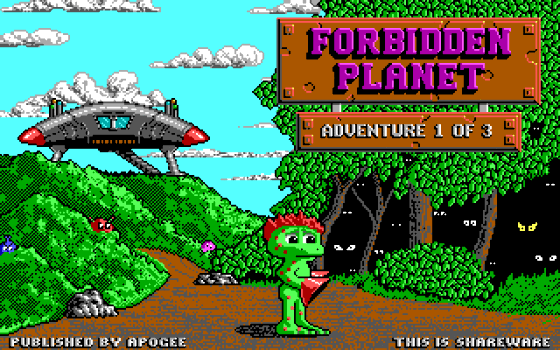
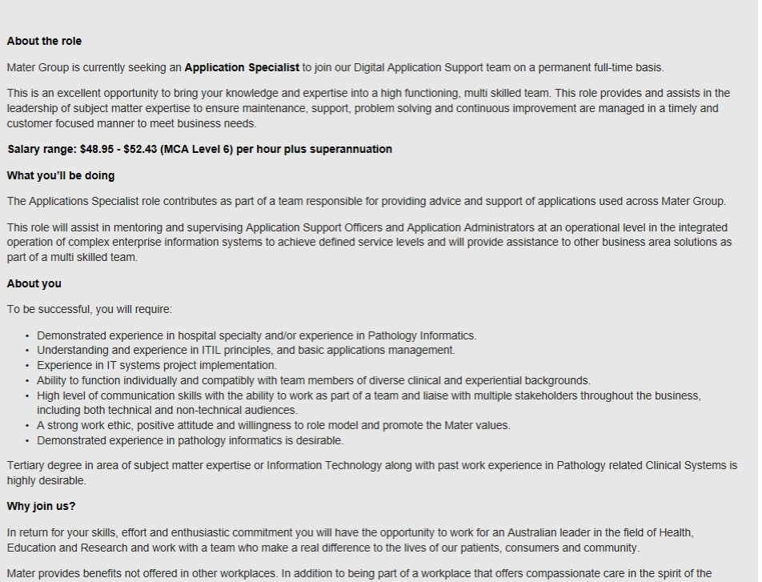
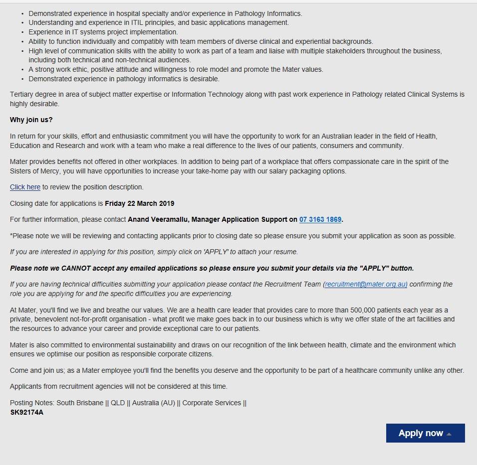

Amit's Profile
About Me
Hi I am Amit. My student ID is BLANK and my email is BLANK. I am married and have 1 son at the moment. My background is Fijian-Indian. I currently work
in pathology. I have no IT background but have picked up a few things here or there in the lab with the laboratory information
system (LIS) and analysers. My highest level of education that I have completed is a Cert IV in Training and Assesment. I have
partially studied a Bachelor of Science with a Major in Chemistry. I can speak English, Hindi and a bit of Farsi. My favourite
thing to do in my spare time is to go fishing.
My Interest in IT
My interests in IT is favoured towards health care. I currently work in the health care industry and wish to contribute to make a better
future for us and our future generations. The best way to do this is to have the best technology in place to find, test, report and
hopefully cure many health issues. I had an interest in IT from a young age which I did not realise until recently. I got my first PC
almost 25 years ago and it was a second-hand Windows 95. My parents then bought me new games to go with it. I had plenty of family members
who had experience with computers but could not get the games to work on the computer. Once everyone had finished trying, I had a go at
it. Within 1 hour I had the games working. That was just an event thinking back now showed that I had an interest in IT. The most recent
event that sparked my interest in getting some education in IT would be working in my current role. I work in healthcare and currently
have had on many occasions doctors complaining about the reporting system currently in place. It is not easy to access and not available
everywhere. The laboratory information system in place now is outdated. I only know the very basics and have learnt only how to alter a
few things with the current LIS in place.
 Reference list:
Cosmos Cosmic Adventure photograph, viewed 16 March 2019, https://archive.org/details/CosmosCosmicAdventure.
I chose to study my Bachelor of Information Technology through RMIT for many reasons. One reason being the reputation it has for being
great university when it comes to IT. Another reason being that it offered online study through OUA. The online study helps a lot as I
currently live in Brisbane, am working fulltime and my family is based here. I believe RMIT is one of the top universities in Australia
and it has a lot to offer.
During this course I expect to learn how Information Systems work and what makes them unique. I also expect to learn how to be confident
in what I do. I would also like to learn how to code properly and hopefully either be part of a team or even lead a team to build better
systems and improve current technology in health care.
My Ideal Job
https://careers.mater.org.au/job/Brisbane-CBD-&-Inner-Suburbs-Application-Specialist-QLD/539530900/


My ideal job would be to be an application specialist in healthcare. This is somebody who helps in creating and managing applications used
in healthcare. These applications are used in tracking of pathology samples, testing of samples, communication between applications and
analysers, sending of reports to clinicians. This is appealing to me since I have been working in healthcare for 8 years. I would like to
do something that can benefit the community and help others and there is always room for improvement in healthcare.
In this role it is desired that a tertiary degree and experience in the field of Pathology systems is not required but is desirable. The
requirements for this role are experience in processing data in Pathology Systems. You also require an understanding and must have
experience in ITIL, which is an information system which is for a business model. You would also need to be competent in working
autonomously and in teams with excellent written and verbal skills. You will also be required to have a positive attitude and work to the
values of the company as you will be representing an organisation.
I have some of the skills for this role but require education and training for most of it. I have started a Bachelor of Information
Technology at RMIT to gain knowledge in this field. I will also be required to get an entry level job or even some unpaid work to gain
experience. I do have 8 years’ experience in pathology. I currently have the skills to work autonomously and in a team with great
communication as I am currently the Supervisor of the lab and Clinical Trials Co-Ordinator.
Myers-Briggs Type Indicator Test Result
Peronality type - Protagonist
89% Extraverted
67% intuitive
58% feeling
54% judging
100% assertive
The test results seem to reflect my personality accurately. I do usually like to talk and get to know people when I work with them so I
can understand their background. This helps me in understanding why people do things in certain ways. When working in a group or forming
a team I need to consider that not everyone likes to talk. It could make them feel uncomfortable. One of the main reasons I do it though
is to break the ice and try and make people feel comfortable. I also need to make sure that people do not feel that I do not do any work
and just talk so I will need to make sure I put my fair share or more of input into the work.
https://www.16personalities.com
What's Your Learning Style Result
Auditory: 35%
Visual: 25%
Tactile: 40%
The results of this test show that I am a hands-on learner. This is true as I feel like I don’t learn as much from just reading compared
to doing the task. I can have somebody show me how to do it and it will not really make too much sense until I do the task. If working in
a team this would be difficult if everyone else in the team is reading the task to try and plan on what do to as I would prefer to do
some of the task to get a better understanding on what needs to be done. I need to be mindful of this as it may seem I am not interested
in the task or it may seem that I think I am ahead of everyone else while doing the task.
http://www.educationplanner.org/students/self-assessments/learning-styles-quiz.shtml
Creativity Test Result
In my creativity test I got 75.21. The average score is 63.36. This means I am above average when it comes to creativity, but I am not
the most creative person. This test result shows that I tend to follow things the way they should be done. I only think of a change if it
is required. In a group I might not have as much input as others might. At the same time, I feel that my input might not be as creative,
but it might be more of a safer and logical answer to issues. When working in a team I should consider that everyone is different, and we
all bring different qualities to the group. That is what makes the team.
http://www.testmycreativity.com/
Project Idea
My project idea is to develop a smartphone app that will allow clinicians to access results for any patient they require. This will include pathology and radiology results. This app will
need to be available not only on smartphones but on desktops as well. It would require a connection to the pathology lab and radiology department. The app will need to be universal so it
can communicate with any laboratory information system.
My motivation for this is that I currently work in healthcare and I currently deal with many clinicians. The biggest issue they face is in which the ease of accessing results for patients.
This will benefit all in the healthcare industry. If clinicians can access results more easily this cuts the wait time for patients to be treated.
The app will feature many options. It will be compatible with all pathology companies so that it does not favour one over the other. The app will feature functions that allow the user to
access results for a patient they are treating. They can also access the requested tests to make sure that the right tests have been performed. This will also show pending results as some
tests have a longer turn around time, this helps the clinician, so they do not need to make multiple orders for the same test. Another feature it would have is that it will show the
specific company that performed the test and if additional tests are required based on results, they can just add it on through the app and it will be received into the laboratory.
With the radiology side it will feature images from scans and reports from the clinician reviewing the report. Each entry will also have a specific number associated with it. Also, all
patients will have a unique identification number as there can be multiple unit record numbers from different medical practices. The app will also have access to a list of local collection
centres for pathology samples to be collected. It will also have very high security on it and only clinicians can access the results as it will be a breach of privacy if it was available
to all. They will be given a log in based on their provider numbers. It will require a log in or a pin when logging in or trying to make a change. It will have a picture menu to assist
with navigating the app.
It would require the software to create apps. Also, would require Apple, Android and Windows products to make the app and test it. Would require high security on the app.
Software and app development will be required. As I do not have any experience in this it could take a while before I gain the skills to do this. There would be plenty of people out there
that would be able to develop an app like this that have experience.
If the project is successful, the outcome will be a centralised place for all results to be shared and sent to. Clinicians will be able to treat patients more efficiently and will have
the ease of access to any testing done on the patient.
Thank You for Visiting My Profile